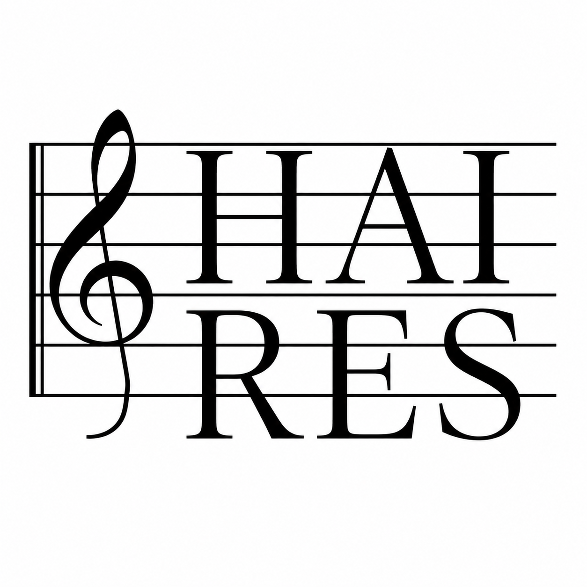

News & writing
Practice-based accounts, project notes, and lab updates.
Supplementary audio samples, live generative delay demos, and evaluation clips for LMDM.
A condensed account of co-designing three AI performance systems for a public concert at MIT.